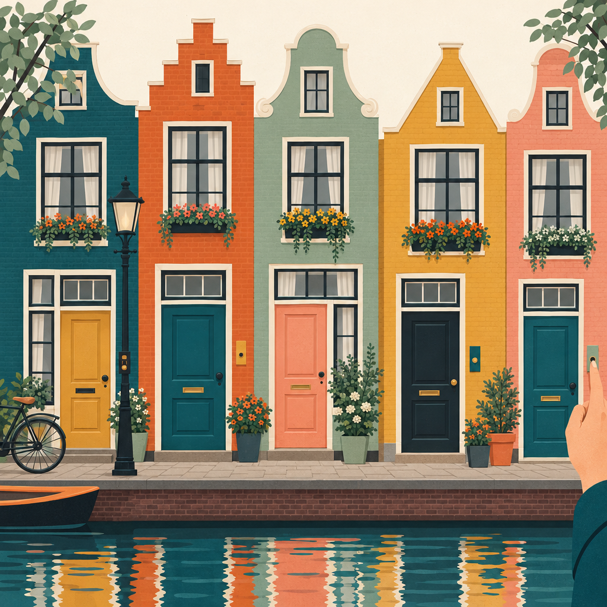
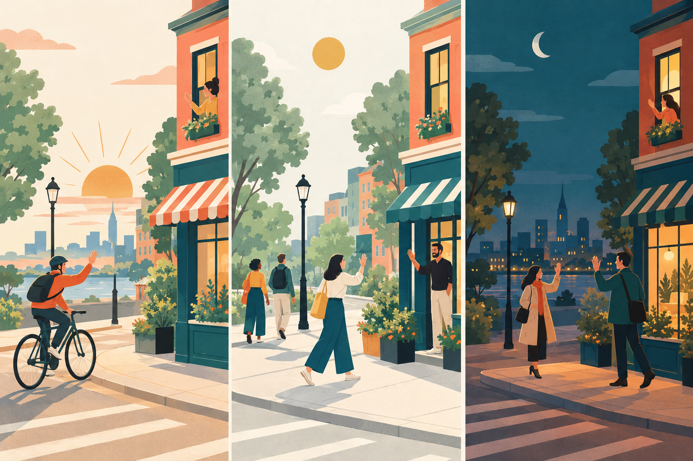
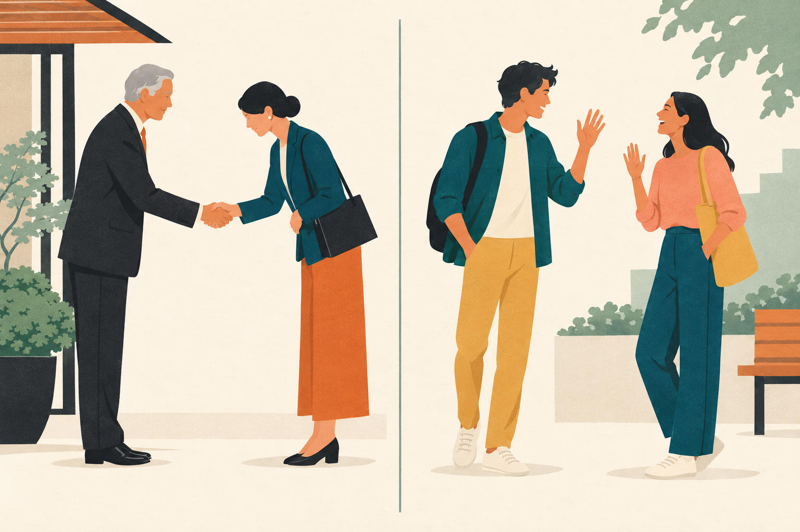
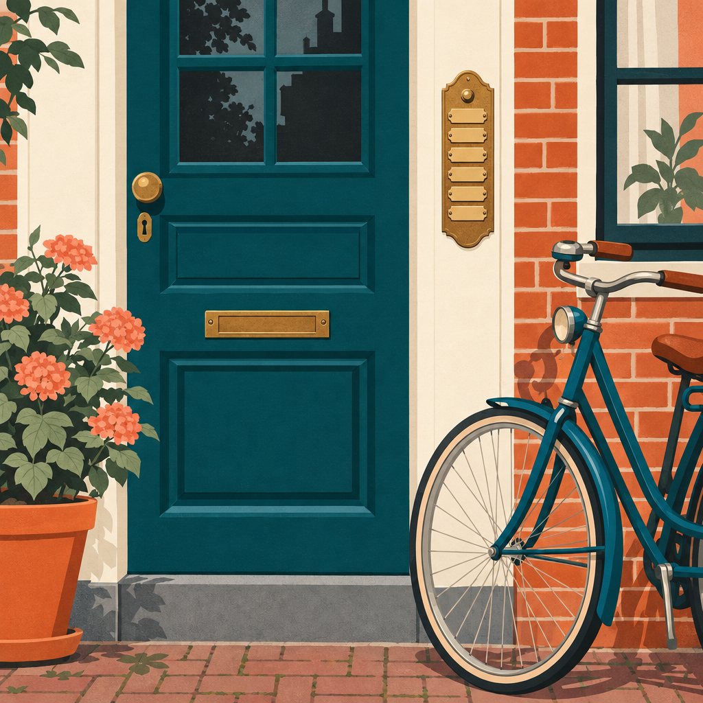

Hoofdstuk 1 · Welkom1.3 Zich voorstellen
1.3 Zich voorstellen /
informatie vragen / landen
zich voorstellen introducing yourself
Wie ben jij?
Ik ben Susy Wall.
Wat is jouw naam?
Mijn naam is Susy Wall.
Wat is je voornaam?
Mijn voornaam is Susy.
Wat is je achternaam?
Mijn achternaam is Wall.
Hoe heet jij?
Ik heet Susy.
informatie vragen adres en land van herkomst
Wat is jouw / je adres?
Mijn adres is Hofstraat 22, 3581 TW Utrecht.
Waar woon jij / je?
Ik woon in Utrecht.
Uit welk land kom je?
Ik kom uit Engeland.
Waar kom je vandaan?
Ik kom uit China.
landen / talen / nationaliteiten
Ik kom uit Nederland.
Ik spreek Nederlands.
Ik ben Nederlander / Nederlandse.
Ik kom uit Engeland.
Ik spreek Engels.
Ik ben Engelsman / Engelse.
Ik kom uit China.
Ik spreek Chinees.
Ik ben Chinees / Chinese.
zes6
Hoofdstuk 1 · Welkom1.3 Zich voorstellen
Talk to the person next to you. Ask:
- Wie ben jij?
- Wat is je adres?
- Uit welk land kom je?
- Welke taal spreek je?
- Wat is je nationaliteit?
Now ask the person on your other side.
zeven7
Hoofdstuk 1 · Welkom1.4 Personaal pronomen
1.4 Personaal pronomen + werkwoord
Ik
ben
Susy.
Hij
geeft
twee dagen les en ik drie.
We
luisteren
naar de tekst.
Waar woon je?
Woont u ook in Utrecht?
| luisteren | hebben | zijn |
|---|
| ik | luister | heb | ben |
| jij / je | luistert | hebt | bent |
| u | luistert | hebt / heeft | bent |
| hij, zij / ze, het | luistert | heeft | is |
| wij / we | luisteren | hebben | zijn |
| jullie | luisteren | hebben | zijn |
| zij / ze | luisteren | hebben | zijn |
In de inversie verandert de vorm: je luistert → luister je? · je hebt → heb je? · je bent → ben je?
acht8
Hoofdstuk 1 · Welkom1.4 Personaal pronomen
Fill in a personal pronoun.
- Dit is Mustafa, mijn buurman. woont in de Emmastraat.
- Sonja, kun je achternaam spellen?
- De andere docent heet Herman. geeft twee dagen les.
- Juha en Arto, komen uit Finland?
- Mijn naam is Shirley en kom uit Australië.
- Mevrouw Govers, hebt het boek?
- Dit is de andere docent. heet Anne-Marie.
- Jullie docenten zijn Herman en Anne-Marie. geven les.
- Ning komt uit China. En , Yin? Kom ook uit China?
- bent nu twee dagen in Nederland en spreekt al Nederlands!
negen9
Hoofdstuk 1 · Welkom1.4 Personaal pronomen
Choose the correct form of the verb.
- Hebben / hebt jullie al pauze?
- We ga / gaan verder met de tekst.
- Luister / Luistert u naar de docent?
- Geef / geeft Richard ook les?
- De docent komt / komen uit Nederland.
- Hij heeft / hebt mijn boek.
- We stopt / stoppen even.
- Ga / gaat je verder met Nederlands?
- Diego en Maria komt / komen uit Spanje.
- U begint / beginnen met de les.
- Wij wonen / woon nu in Nederland.
- Mevrouw Halvers is / zijn jullie docent.
tien10
Hoofdstuk 1 · Welkom1.5 Telwoorden
1.5 Telwoorden
0nul
1één
2twee
3drie
4vier
5vijf
6zes
7zeven
8acht
9negen
10tien
11elf
12twaalf
13dertien
14veertien
15vijftien
16zestien
17zeventien
18achttien
19negentien
20twintig
21eenentwintig
22tweeëntwintig
30dertig
40veertig
50vijftig
60zestig
70zeventig
80tachtig
90negentig
100honderd
124honderdvierentwintig
1000duizend
Ask the person next to you.
- Wat is je huisnummer?
- Wat is je telefoonnummer?
- Wat is je geboortedatum?
- Wat is je postcode?
Your teacher will give you a worksheet.
elf11
Hoofdstuk 1 · Welkom1.6 Het alfabet
1.6 Het alfabet
Listen and repeat the letters.
abcdefghijklmnopqrstuvwxyz
ij
lange ij
ei
korte ei
y
Griekse ij
- Wat zijn de letters van je postcode?
- Wat is je voorletter?
- Met welke letter begint je achternaam?
Line up in alphabetical order, by surname.

twaalf12
Hoofdstuk 1 · Welkom1.7 Spellen
1.7 Spellen
Kun je dat spellen? / Kunt u dat spellen?
Hoe spel je dat? / Hoe spelt u dat?
Wall, hoe spel je dat?
Met dubbel l.
Susy, is dat met een s of een z?
Met een s, en met een Griekse y.
Ask three other students for their first name and surname. How are they spelled?
dertien13
Hoofdstuk 1 · Welkom1.8 Begroeten
1.8 Begroeten en afscheid nemen

begroeten greetings
goedemorgen
good morning
goedemiddag
good afternoon
goedenavond
good evening
goedendag
good day
dag
hello
hoi
hi / hello
hallo
hello
afscheid nemen saying goodbye
goedemorgen
goodbye, good morning
goedemiddag
goodbye
goedenavond
goodnight
goedendag
goodbye, goodday
dag
bye
daag
bye
doeg
bye
doei
bye
tot zo
see you soon
tot straks
see you later
tot morgen
see you tomorrow
tot ziens
goodbye, so long
Walk around the room. Greet a student. The student says goodbye. Move on to another student and greet them.
Example
A: Goedemorgen.
B: Dag. (move on to the next student)
A: Hoi.
C: Tot ziens.
veertien14
Hoofdstuk 1 · Welkom1.8 Begroeten
Work in pairs. Think up questions for an interview. Ask about: name, address, country, language, nationality.
Example
A: Dag, ik ben Elena. Wie ben jij?
B: Ik ben Bertrand. Waar woon je?
A: Ik woon in Nijmegen. En jij?
B: Ik woon ook in Nijmegen. Wat is je adres?
Opdracht 11 Filling in a form
Fill in your personal details.
vijftien15
Hoofdstuk 1 · Welkom1.9 Uitspraak
1.9 Uitspraak: zinsaccent
Listen to the question and the answer. Which words carry the stress? Repeat the answer.
- Kom je uit Nederland?
Nee, ik kom uit Hongarije.
- Heet je buurman Peter?
Nee, mijn docent heet Peter.
- Woon je in de Hofstraat?
Nee, ik woon in de Kerkstraat.
- Woon je in Groningen?
Nee, ik woon in Leeuwarden.
- Woont u hier al twintig jaar?
Nee, ik woon hier al dertig jaar.
- Is je postcode 3581 TB?
Nee, mijn postcode is 3581 TW.
- Ben jij Lily Lander?
Nee, ik ben Sara Lander.
- Beginnen we met tekst 2?
Nee, we beginnen met tekst 1.
- Is Abdul je voornaam?
Nee, Abdul is mijn achternaam.
- Is het pauze?
Ja, het is pauze.
zestien16
Hoofdstuk 1 · WelkomCultuur
Cultuur
u
of jij?

Who do you say u to? Who do you say jij to?
u
jij
Docent
Buurman van 20
Buurvrouw van 82
Mevrouw / meneer Smit
Susy
Ning
zeventien17
Hoofdstuk 1 · WelkomIn de praktijk
In de praktijk
De top 10 van familienamen
in Nederland
Do you know anyone with these surnames?
1de Jong
2Jansen
3de Vries
4van de / den / der Berg
5van Dijk
6Bakker
7Janssen
8Visser
9Smit
10Meijer / Meyer

achttien18
Hoofdstuk 1 · WelkomEigen vocabulaire
Eigen vocabulaire
Eigen vocabulaire
The theme of this chapter is Welkom.
Which words would you like to add? Write them below.
negentien19
Hoofdstuk 1 · WelkomReflectie
Reflectie
What can you do now?
At coutinho.nl/nederlandsingang3 you can work on:
- a grammar video
- a gap-fill of the dialogue
- extra exercises
- an intensive listening text
twintig20